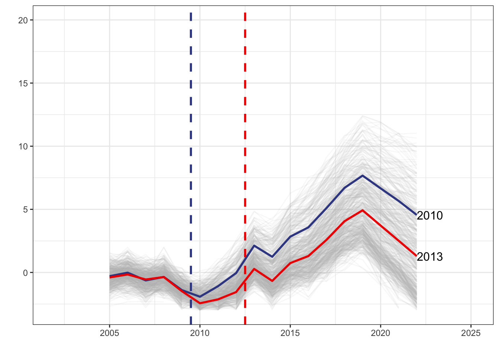
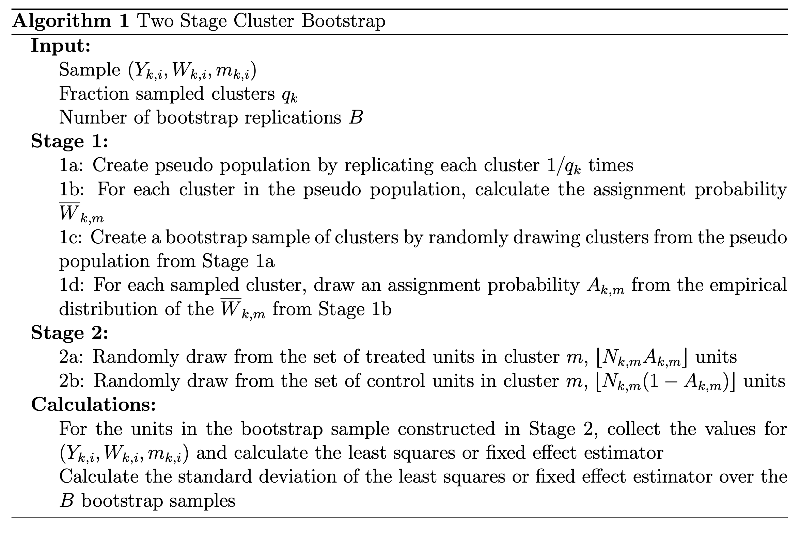

Inference
Outline
Unit-level Treatment Assignment
If one has a random sample of units from a large population with randomized treatment assignment at the unit level, there is no reason to cluster the standard errors of the least squares estimator.
Doing so can be harmful, resulting in unnecessarily wide confidence intervals.
In this case, clustering is not appropriate even if there is within-cluster correlation in outcomes (however those clusters are defined), and thus even if clustering makes a substantial difference in the magnitude of the standard errors.
If the sample represents a large fraction of the population and treatment effects are heterogeneous across units, robust standard errors are also conservative.
If the data contains information on attributes of the units that are correlated with unit-level treatment effects, the methods in Abadie et al. [2020] can be applied to obtain less conservative standard errors.
Clustered Assignment
Holds even with random sampling of clusters (e.g., hospitals, schools, etc.) or where we observe the whole population (e.g., states).
This is one case where clustering becomes relevant, although conventional cluster standard errors can be extremely conservative.
If assignment is perfectly clustered so that units that belong to the same cluster have the same treatment assignment, there is no improvement from using the CCV variance and the TSCB variance estimator is not applicable.
If assignment is partially clustered—so there is variation in treatment assignment within clusters—and cluster sizes are large, the CCV and TSCB can be applied and can produce standard errors considerably smaller than the usual clustered standard errors.
Another reason to cluster standard errors is cluster sampling. The case with qk close to zero is sometimes relevant, especially when the sample is a panel data on individuals or a cross-section of families, and the individuals or families in the sample are a small fraction of the population.
Then, the clustered variance estimator of the least squares estimator is asymptotically correct regardless of whether the treatment assignment is clustered or not.
The same result holds when clusters are large (e.g., states), qk is a substantial fraction of the clusters in the population, but pk is small—so the sample includes only a small number of units from each cluster.
In other cases, cluster standard errors can be considerably larger than necessary. If cluster sizes are large and there is treatment variation within clusters, CCV and TSCB can substantially reduce the magnitude of standard errors.
Cluster-level intervention, all units exposed
- effect of statewide policy change.
Unit-level intervention, units within cluster are similar.
- relationship between educational attainment and earnings.
Let’s start…

| unit | state | year | y_it | d_it | x_i | x_it | ever_treated |
|---|---|---|---|---|---|---|---|
| 1 | 27 | 2005 | 0.627 | 0 | 1.553 | -0.484 | 1 |
| 1 | 27 | 2006 | -0.157 | 0 | 1.553 | 0.472 | 1 |
| 1 | 27 | 2007 | -0.261 | 0 | 1.553 | -0.406 | 1 |
| 1 | 27 | 2008 | -0.319 | 0 | 1.553 | -0.735 | 1 |
| 1 | 27 | 2009 | -1.670 | 0 | 1.553 | -2.017 | 1 |
| 1 | 27 | 2010 | -2.920 | 0 | 1.553 | -2.331 | 1 |
Two-Stage Cluster Bootstrap
- $ Y_{k,i} $ is the outcome.
- \(m_{k,i}\) is the cluster that unit \(i\) of population \(k\) belongs to.
- \(W_{k,i}\) is the treatment indicator.

Stage 1
In this stage we sample the fraction treated within each cluster.
tscb_1 <-
df %>%
group_by(state) %>%
summarise(fraction_treated = mean(ever_treated)) %>%
ungroup()
tscb_1 %>%
kable()| state | fraction_treated |
|---|---|
| 1 | 1 |
| 2 | 1 |
| 3 | 1 |
| 4 | 1 |
| 5 | 1 |
| 6 | 1 |
| 7 | 1 |
| 8 | 1 |
| 9 | 1 |
| 10 | 1 |
| 11 | 1 |
| 12 | 1 |
| 13 | 1 |
| 14 | 1 |
| 15 | 1 |
| 16 | 1 |
| 17 | 1 |
| 18 | 1 |
| 19 | 1 |
| 20 | 1 |
| 21 | 1 |
| 22 | 1 |
| 23 | 1 |
| 24 | 1 |
| 25 | 1 |
| 26 | 1 |
| 27 | 1 |
| 28 | 1 |
| 29 | 1 |
| 30 | 1 |
| 31 | 1 |
| 32 | 1 |
| 33 | 1 |
| 34 | 1 |
| 35 | 1 |
| 36 | 0 |
| 37 | 0 |
| 38 | 0 |
| 39 | 0 |
| 40 | 0 |
| 41 | 0 |
| 42 | 0 |
| 43 | 0 |
| 44 | 0 |
| 45 | 0 |
| 46 | 0 |
| 47 | 0 |
| 48 | 0 |
| 49 | 0 |
| 50 | 0 |